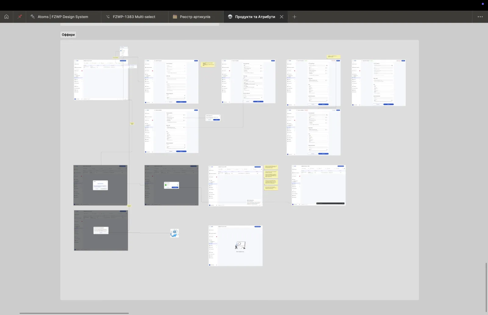

Silpo ERM — nine back-office modules, one interface language.
A centralised back-office platform for the e-commerce operations of one of Ukraine’s largest grocery retailers: orders, promotions, billing, payments, loyalty, courier logistics and role-based access. Nine modules, five departments, one shared UI kit.

The business problem: operations spread across tools.
Silpo is part of Fozzy Group, one of the largest private companies in Ukraine. Its e-commerce operations had grown across separate tools and teams: marketers ran promotions in one place, accountants reconciled in another, couriers worked in a third, and business analysts spent their week translating between them.
The ERM had one job: bring order administration, supplier collaboration, logistics, promotions and loyalty into a single platform, so that fewer steps are done by hand and fewer mistakes travel between departments.
My role and the team.
Business analysts and product owners defined what to optimise. My part started there: I turned their requirements into flows that operators could actually use, designed six of the main sections myself and co-led the UI kit that all nine modules share.
- De-facto design leadMy title was Product Designer. In practice I was the person who aligned designers, developers, QA, product owners and analysts when their priorities collided.
- Scrum cadenceSprints, weekly cross-functional syncs, and Jira, Confluence and Slack as the shared source of truth.
- One UI kitAn atomic design kit with standard components, so every module looks and behaves the same and engineering does not rebuild a table nine times.
How we worked: listen, map, prototype.
- Research with the people who do the workInterviews and surveys with managers and frontline employees across departments. For the promotions module I ran semi-structured interviews of 30–40 minutes with promo managers. They pointed to the same three things: little automation, complex promo rules and weak analytics.
- Competitor analysisShopify, Etsy and Odoo — for information architecture, dashboard density and admin conventions.
- Scenario mapsEach business process was laid out as a navigable flow before any screen was drawn.
- Prototype testsInteractive prototypes were tested with operators before development, when a wrong flow is still cheap to change.
Nine modules — and who can do what in each.
- E-commerceOrders with status tracking, and campaign tooling for marketers.
- GEOAddress inquiries and delivery accuracy.
- BillingAccounting automation, invoicing, payment monitoring.
- COREProduct catalogue, characteristics, services per branch, users.
- PaymentsTransactions with merchants and business operations.
- LoyaltyPartner programmes and B2B participation.
- CityRyderCourier management: routing, monitoring, geozones and a compensation engine.
- DAMSInventory transfers, expiry monitoring, KPI panels and staff schedules.
- ProfileEmployees and role-based access: who sees and edits what across the other eight modules.

Outcome.
The error reduction is the headline number the project was judged by. The quieter result matters as much: departments that used to pass work through chats and spreadsheets now see the same order, in the same state, on the same screen.
What I would tell my day-one self.
- Alignment is the deliverableWhen nine modules touch five departments, the designs are the easy part. Agreement is the product.
- Plan for re-prioritisationA multi-stage rollout will change order. Build a rhythm that survives it.
- Test flows before they are builtA wrong flow found in a prototype costs an afternoon. Found in production, it costs a release.
- Train the operatorsAdoption is part of the design. Without sessions and support, no redesign sticks.
If you liked this, also see…
Found this through Upwork?
Then you already know where to reach me. Send the brief through your Upwork job post or an invite — I usually reply within a working day.